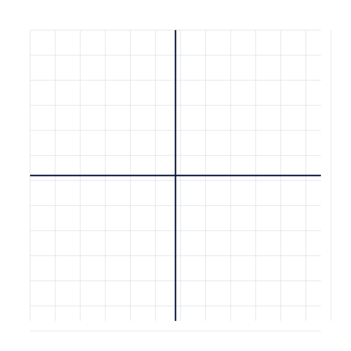

1ere spe S2 SUPPORTS Manipulation
1ere_spe_S2_SUPPORTS_Manipulation
Séance 2 — Fonctions, fonctions de référence et première approche de la dérivation
Nexus Réussite - Stage de pré-rentrée 2026-2027
Règles d’utilisation
- Imprimer en A4, éventuellement sur papier épais.
- Découper les cartes avant la séance.
- Ne distribuer l’aide qu’après une première tentative.
- Conserver la production initiale de l’élève pour la comparer à la reprise.
Activité 1 — « Le point ((3;7)) parle »
Cartes à classer :
- (f(3)=7) ;
- (f(7)=3) ;
- (7) est l’image de (3) ;
- (3) est l’antécédent de (7) ;
- (3) est l’image de (7) ;
- le point ((3;7)) appartient à 𝒞f.
Objectif : construire un réseau d’équivalences, non apprendre une phrase isolée.
Activité 6 — « Les sécantes se rapprochent »
Pour f(x)=x2, calculer la pente entre (1) et :
- (2) ;
- 1,5 ;
- 1,1 ;
- 1,01.
Faire apparaître progressivement la valeur 2.
Figures imprimables

Cartes à découper
| Carte | Texte à imprimer |
|---|---|
| PROPRIÉTÉ | Quelle propriété ou relation relie les données à ce que tu cherches ? |
| REPRÉSENTATION | Fais un schéma, un tableau, une droite ou un graphique avant de calculer. |
| CONTRÔLE | Ton résultat a-t-il le bon signe, la bonne unité et le bon ordre de grandeur ? |
| CONFIANCE | Je devine / j’hésite / je pense avoir juste / je peux expliquer. |
_Source pédagogique unique : `stage_prerentree_premiere_maths.md`. Les objectifs, l’ordre des séances et les diagnostics ne sont pas modifiés ; ils sont déclinés ici en supports opérationnels._